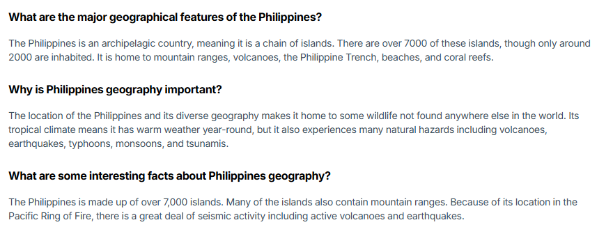
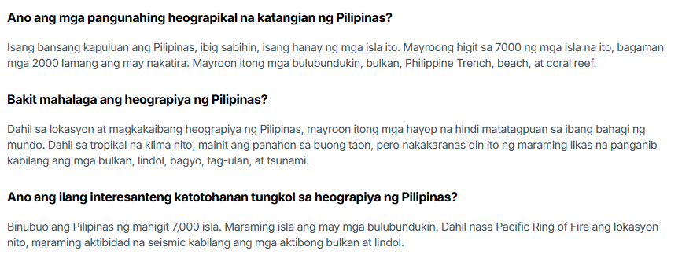
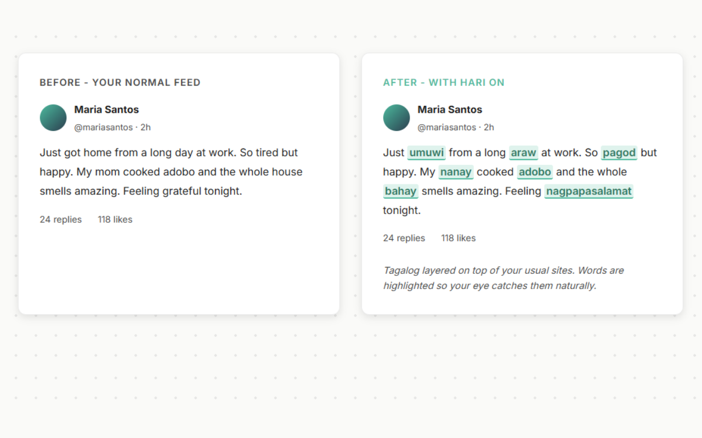

No flashcards, no streaks, no study sessions. Hari quietly layers Tagalog into the sites you already read, with instant translations so you're never stuck.
No credit card · Pause anytime · Uninstall in one click
Hari adds a gentle Tagalog layer to sites you already visit — news, blogs, Wikipedia, social feeds, and more.
Hari replaces or highlights small bits of English with Tagalog words and phrases, matched to the context of what you're reading.
Hover or click to see English translations, part of speech, and example sentences so you never lose the meaning.
Choose how much Tagalog you see — from "just a few words" to "give me more" — so it always feels comfortable.
Here's what it looks like before and after Hari turns on — on the sites you already visit.



Hari layering Tagalog into a social feed as you scroll.
Hari is for people who want Tagalog in their life, but can't add more "study time" on top of work, school, and everything else.
A lot of Filipino Americans grew up surrounded by Tagalog but were never really taught. Talking to relatives can feel awkward, and most language apps feel like extra homework on top of a busy life.
Even if you're not Fil‑Am, Hari gives you real‑world Tagalog exposure instead of artificial textbook sentences.
You can't know if Hari fits your life until you feel it on real sites. That's why the trial is based on usage, not a timer.
You get 10,000 characters of Tagalog translations for free.
For most people, that's several days of normal browsing with Hari turned on.
When you reach 10k, Hari simply pauses and asks if you'd like to upgrade. No credit card, no surprise charges.
Install in seconds, uninstall in one click if it's not for you.
If Hari helps you stick with Tagalog, you can upgrade to keep the Tagalog layer on all the time.
Less than a single tutoring session ($50–80/hr). Tagalog in your life every single day.
No card is required. Install Hari, use up to 10,000 characters of Tagalog translations, and only pay if you decide to upgrade.
Hari simply pauses. You'll see a message explaining you've used your free characters and giving you the option to upgrade or uninstall.
Hari is designed to be lightweight and respectful of the page. If something looks off, you can turn Hari off for that site in one click.
Yes. Hari was designed with Fil‑Ams in mind, but anyone learning Tagalog can use it to get real‑world exposure while browsing.
Yes. You can cancel your subscription and uninstall the extension whenever you'd like.
No. Hari only processes the specific text it needs to translate, and that happens locally in your browser. We don't store your browsing history, read your messages, or track the pages you visit.
Hari works on most English-language sites — news sites, Wikipedia, blogs, Reddit, social feeds, and more. If a site uses unusual formatting or restricts extensions, Hari may not activate there, but it works on the vast majority of everyday browsing.
Share wins, ask questions, and connect with other learners in our Discord community.
Join the DiscordNo textbooks, no streaks, no pressure — just Tagalog quietly showing up on the sites you already read. Try it on your real browsing and see how it feels.